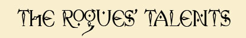
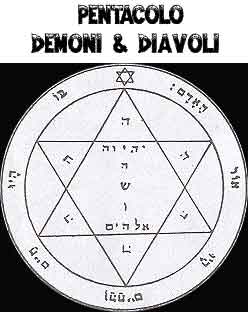
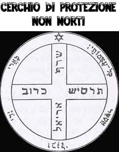
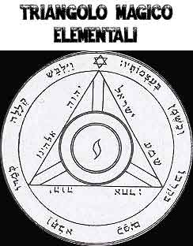
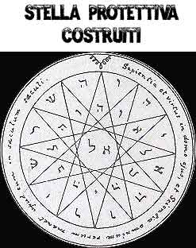
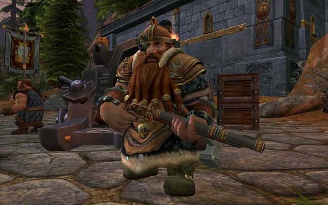
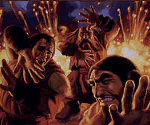

Le seguenti regole sono state ideate per rendere più versatile, differenziata e divertente la classe dei ladri (thief) attraverso l'inserimento di una serie di talenti speciali a cui hanno accesso, unicamente alla loro creazione, i personaggi. Ciò può avvenire con due diverse modalità:
a) Scelta di un talento speciale
Alla fine della creazione di un personaggio che appartenga alla classe rogue (ladri e cantori) il giocatore può utilizzare 4 punti creazione (sempre che gli siano rimasti) per ottenere un talento speciale (un solo talento può essere acquisito in questo modo). Il giocatore quindi potrà scegliere la sottoclasse dalla quale poi si selezionerà a sorte (con il tiro di 1d20) il talento che costui avrà acquisito.
b) Appartenenza ad una sottoclasse di ladri
In alternativa, solo i personaggi della classe di ladri (thief) potranno decidere di appartenere ad una delle seguenti sottoclassi di ladri (sempre che ne abbiano i requisiti minimi) ottenendo tutti i benefici e le limitazioni previste dalla stessa. Gli appartenenti a tali sottoclassi saranno considerati comunque della classe thief, seguiranno però una diversa, specifica, tabella dei punti esperienza.
LE SOTTOCLASSI DEI LADRI
Descrizione
A differenza dei comuni vagabondi, gli Acrobati sono personaggi estremamente addestrati nell'effettuare acrobazie ed altri sorprendenti mosse basate sulla loro agilità nel corso di un combattimento. Costoro possiedono un corpo atletico e scattante riuscendo ad evitare i pericoli con i loro movimenti fulminei.
Requisiti di Abilità
Destrezza 16,
Intelligenza
12
Restrizione Speciale
Intenso Addestramento Fisico
A causa del loro superiore addestramento fisico gli acrobati hanno dedicato meno tempo alle arti lesive dei vagabondi ed allo studio delle rune magiche. Per tale motivo costoro ricevono un malus di -15% alle prove nelle abilità Hide in Shadow e Move Silently effettuate al solo fine di colpire un nemico con la manovra speciale dei ladri "Lethal Attack" e si considerano a tutti gli effetti come vagabondi di un livello di esperienza inferiore quando effettuano tale manovra. Inoltre, costoro ricevono un malus di -10% a tutte le prove nell'abilità da ladri "Read Languages".
Talenti
Speciali
(1-5) Schivata Lesiva
Gli
Acrobati possono
essere avversari molto infidi. Costoro, infatti, utilizzano la loro
agilità per colpire i nemici dopo che gli stessi si sono esposti in
seguito ad un attacco che l'Acrobata è riuscito a schivare. Per tale motivo, gli
Acrobati che possiedono questo talento
ottengono il seguente beneficio:
* Nel corso di una battaglia ogni volta che l'Acrobata riesce a
schivare un colpo in arrivo attraverso l'utilizzo dell'arte di
combattimento "Arte della Schivata" costui potrà,
impiegando
2 punti combattimento (non
applicandosi alcun cumulo o limitazione con altri punti spesi nel round,
ma non potendosi ridurre il costo in punti combattimento ad es. con la
competenza Combat Tactics o con la fattura leggendaria
dell'arma), effettuare un attacco in corpo a corpo contro la medesima
creatura di cui sia riuscito a schivare l'attacco. Tale attacco si
considererà effettuato al medesimo fattore iniziativa dell'attacco
ricevuto anche se in un momento immediatamente successivo allo stesso.
Deve osservarsi che questo attacco supplementare provocherà
i soli danni dell’arma comprensivi dell'eventuale
bonus magico o dovuto alla fattura. A tale attacco, infatti, non saranno aggiunti i modificatori dovuti
alla forza ed alla bravura nell’uso
dell’arma, inoltre non potranno essere utilizzati punti combattimento
od arti di combattimento mentre
sarà possibile effettuare un normale colpo critico.
(6-10) Schivata Acrobatica
Gli Acrobati sono i migliori a schivare i colpi in arrivo, per questo motivo costoro ricevono i seguenti benefici:
* Gli Acrobati ottengono uno sconto del 50% per imparare l'Arte della Schivata.
* Quando gli Acrobati utilizzano il colpo di combattimento speciale Evasione Migliorata costoro possono superare una prova nella competenza Tumbling, se la prova riesce costoro pagheranno il suddetto colpo di combattimento speciale un costo base pari a 2 punti combattimento. Se la prova riesce con un successo critico costoro otterranno i benefici del colpo di combattimento senza il pagamento di alcun punto combattimento e senza che tale colpo si consideri utilizzato nel corso del round. Se la prova fallisce costoro pagheranno il colpo di combattimento 2 punti combattimento supplementari (se non dispongono di tali punti il colpo si considererà comunque effettuato). Se la prova fallisce con un fallimento critico costoro non solo pagheranno il colpo di combattimento 2 punti combattimento supplementari ma non potranno effettuare alcuna schivata nel round in corso.
(11-15)
Acrobazia in Combattimento
Gli Acrobati hanno una preparazione atletica notevole e sono in grado di effettuare acrobazie anche in combattimento. Per tale motivo, gli Acrobati che possiedono questo talento ottengono il seguente beneficio:
* Gli Acrobati ricevono gratuitamente la competenza non relativa alle armi Tightrope Walking.
*
In fase di creazione, gli Acrobati possono accedere pagando
un solo
punto creazione
al talento dei vagabondi
Evasione Acrobatica.
*
Una sola volta al round, anche senza effettuare alcuna rincorsa, l'Acrobata che
sia appoggiato ad un suolo solido può, in luogo di
effettuare il suo intero mezzo movimento,
effettuare un grande balzo fino a 6 metri di distanza in
orizzontale (non anche verso l'alto) potendo
scavalcare ostacoli fino a 2 metri di altezza. Per effettuare tale manovra
costui dovrà superare una prova di destrezza
(se la prova fallisce la manovra non sarà effettuata, l'Acrobata resterà nella
posizione originaria ed il mezzo movimento si considererà come utilizzato). Si
noti che, qualora il personaggio utilizzi questo metodo di movimento per uscire
dal corpo a corpo, costui non subirà gli attacchi di opportunità. Per poter
utilizzare questa abilità il personaggio non deve subire alcuna penalità al
movimento per situazioni particolari di combattimento (si pensi alla situazione
di incapacitato) o per effetti di magie o colpi critici subiti, inoltre il
personaggio non deve risultare in alcun caso ingombrato. Le creature che
posseggono il talento razziale o l'abilità saltare possono utilizzare questo
talento all'atto del salto senza che sia richiesta alcuna prova di destrezza
(non impiegando, quindi, l'intero mezzo movimento ma unicamente
lo spostamento di 3 metri di movimento
richiesto per effettuare il salto).
(16-20) Scansare i Proiettili
Gli Acrobati hanno dei riflessi eccezionali, possono provare a schivare gli oggetti in arrivo che gli sono scagliati contro. Per tale motivo, gli Acrobati che possiedono questo talento ottengono il seguente beneficio:
* Gli Acrobati ricevono gratuitamente la competenza non relativa alle armi Tumbling.
*
Una sola volta al round,
l'Acrobata può provare a scansare un arma da lancio od un proiettile che gli è
scansato contro. L'acrobata deve essere in grado di
vedere arrivare il colpo per cui quest'abilità può essere usata solo contro
oggetti scagliati dalla distanza. Il talento può essere cumulato con una prova
di schivata effettuata contro un attacco in corpo a corpo. L'abilità non può
essere utilizzata per scansare oggetti dalle dimensioni maggiori rispetto ad un
comune masso (non può ad esempio essere scansato un macigno lanciato da una
catapulta od il dardo lanciato da una ballista). In ogni caso, l'Acrobata può
provare a scansare un singolo oggetto. La prova per scansare l'oggetto deve
essere dichiarata ed effettuata prima dell'eventuale tiro per colpire effettuato
contro l'Acrobata o prima del tiro salvezza eventualmente concesso per evitare
il colpo. Per riuscire a scansare l'oggetto l'Acrobata dovrà superare una prova
di destrezza alla quale saranno applicati i seguenti modificatori:
- Armi da lancio: nessuna penalità.
- Armi da tiro: penalità di +2 alla prova.
- Armi da fuoco: penalità di +4 alla prova.
- Oggetti che non richiedono tiro per colpire o tiro salvezza per essere
evitati: penalità di +5 alla prova.
L'Acrobata può evitare anche proiettili ed oggetti che comunemente colpiscono
automaticamente (applicando la più gravosa penalità) come ad esempio un singolo
magic missile. Questa prova non può essere effettuata se l'Acrobata viene
sorpreso ed in ogni caso in cui non sia in grado di effettuare correttamente una
prova di destrezza (si pensi al caso in cui è stordito oppure nella fase di
lancio di un incantesimo).

Descrizione
La morte può raggiungere ogni creatura dovunque la stessa si nasconda. Questo detto è ancora più veritiero quando viene assoldato un assassino. I vagabondi che appartengono a questa classe sono soggetti senza scrupoli, letali e precisi. Esperti nell'uso delle armi e dei veleni costoro sono addestrati a portare la morte con velocità ed accuratezza. Sono sicari freddi e precisi, conosciuti per la bravura e scrupolosità con la quale portano a compimento le missioni. Si tratta di una classe estremamente letale e rapida in combattimento.
Requisiti di Abilità
Destrezza 15, Forza
15,
Intelligenza
12
Restrizione Speciale
Mancata
conoscenza delle
arti arcane
A causa del loro addestramento con le armi, gli assassini non possiedono l'abilità da ladri "Read Languages". Infine, dato che dedicano costantemente gran parte del loro addestramento ad utilizzare armi e veleni, ricevono meno punti da distribuire tra le abilità da ladri, in particolare ottengono 50 punti al primo livello di esperienza (contro i 60 dei comuni ladri) e 25 punti ad ogni successivo livello (contro i 30 dei comuni ladri).
Talenti
Speciali
(1-5) Danza di Morte
Gli assassini conoscono un modo di combattere unico, letale e allo stesso tempo coreografico che è caratterizzato da ondeggiamenti sinuosi del corpo e contraddistinto dall'alternarsi di movimenti molto lenti e scatti fulminei ed improvvisi. La bellezza di questa danza di morte è quasi ipnotica per i profani che si rendono conto che questi movimenti simulano quelli che i ragni effettuano quando attaccano la loro preda. Questo metodo di combattimento può essere utilizzato solo utilizzando due armi di cui la secondaria sia necessariamente un pugnale. Questo metodo di combattimento è incompatibile con qualsiasi altro stile od equilibrio particolare. Per utilizzare questo stile di combattimento, inoltre, è necessario che il personaggio danzi combattendo, per tale motivo occorre che il personaggio combatta da solo contro i propri nemici e che disponga di adeguato spazio (non è possibile utilizzarla nel caso in cui nelle posizioni di corpo a corpo adiacenti a quella in cui si trova il ladro siano presenti creature a lui alleate nonché in tutte le altre situazioni di spazio limitato o di equilibrio precario). Quando combattono in questo modo gli assassini ottengono un bonus di +1 al tiro per colpire e di -1 alla classe armatura in quanto i nemici non riescono a rendersi conto precisamente di quando il personaggio colpirà e di che movimenti effettuerà. Quando utilizzano questo particolare stile di combattimento, inoltre, gli assassini hanno accesso a due colpi speciali di combattimento:
(6-10) Specialista nell'uso dei pugnali
Quando l'assassino combatte utilizzando due armi, di cui la secondaria sia appartenente alla categoria dei pugnali, costui non riceve alcuna penalità per combattere a due armi.
Dopo
aver raggiunto, inoltre, il grado di Campione nell'uso di un pugnale può
progredire fino a divenire: Specialista (375*
punti arma) Tiro per colpire +2,
Danni +2, Iniziativa
-1
Raggiungendo il livello di abilità Specialista
nell'uso di un pugnale il personaggio acquista anche
2 punti combattimento
ulteriori rispetto a quelli normalmente previsti per il grado di campione.
Se lo stesso livello di abilità è acquisito per un ulteriore tipo di pugnale
(anche se di tipo gemello o affine al precedente) il
personaggio riceve ulteriori 2 punti combattimento
supplementari.
L'assassino, infine, può effettuare la manovra speciale dei ladri "Lethal Attack" con la sua arma principale nonostante impugni un'arma secondaria appartenente alla categoria dei pugnali.
(11-15)
Letalità
nel
Combattimento
L'assassino
riceve gratuitamente la competenza Venom Handling
ed Ambush. Inoltre
paga solo il 50% dei punti necessari per imparare le competenze Venom
Extracting, Blind
Fighting, Dirty
Fighting, Rapid Arming
e Quickness
(si noti che questo beneficio non si estende agli slots supplementari
eventualmente acquisiti dal personaggio).
Per il suo superiore addestramento nell'uso delle armi l'assassino riceve 700 punti arma iniziali il luogo dei normali 550 punti arma ottenuti dai ladri, inoltre se viene creato un personaggio di livello superiore al primo, per ogni livello l'assassino riceve 130 punti arma.
L'assassino, infine, riceve un bonus di +5% alle
prove nelle abilità
Hide in Shadow e Move Silently
effettuate al fine di colpire un nemico
con la manovra speciale dei
ladri "Lethal Attack" e
si considera di un livello superiore al fine del calcolo del danno supplementare
provocato attraverso questa manovra speciale di combattimento.
(16-20) Superiori Capacità Evasive
L'assassino riceve gratuitamente la competenza Evasive Fighting. Inoltre, l'assassino riceve gratuitamente l'arte di combattimento "Arte della Schivata". Infine, l'assassino paga solo 3 punti di combattimento il colpo di combattimento speciale EVASIONE MIGLIORATA.

Descrizione
I briganti sono esseri liberi, senza legami e spesso senza regole. Costoro non hanno una casa, non hanno un campo da coltivare né una vigna da curare. Costoro sono spesso soggetti senza scrupoli per i quali razziare, depredare e taglieggiare sono i migliori metodi per accrescere il patrimonio e quindi la propria potenza personale. Alcuni briganti, però, non sono malvagi ma operano oltre la legge, troppo spesso sostanzialmente ingiusta, al fine di agevolare coloro che ritengono meritevoli di aiuto. Indipendentemente dai loro ideali, però, tutti i briganti sanno come combattere con coraggio e come utilizzare la violenza per perseguire i loro scopi. In alcuni casi, questi individui possono essere al soldo di chi desidera creare disordini od aggredire dall'interno comunità ostili od invise.
Requisiti di Abilità
Requisiti di abilità: Forza
16, Costituzione 12,
Destrezza 12
Requisiti di Allineamento
Non possono essere di alcun allineamento Legale (anche per la scelta dei singoli
talenti attraverso l'utilizzo dei punti creazione).
Restrizione Speciale
Cattiva reputazione e minore propensione alla tecnica ed alle arti arcane
A causa della loro vita dedita al brigantaggio e più votata al combattimento, i briganti posseggono un punteggio pari al 66% (arrotondato per difetto) del loro punteggio finale (ossia dopo ogni altro modificatore) nelle abilità da ladri "Open Lock, Find/Remove Traps e Read Languages". Inoltre, il personaggio ha generalmente una reputazione negativa, ormai consolidata e diffusa, in tutta la comunità di partenza. Per questo motivo sarà spesso trattato con diffidenza e gli risulterà estremamente difficile ottenere qualsiasi forma di favore (ospitalità, sconti, interventi in suo favore di autorità o privati) da parte dei membri legali di quella comunità (ovviamente questa limitazione di ruolo non sarà applicata nei confronti delle persone con le quali il personaggio intrattiene rapporti di collaborazione od amicizia).
Talenti
Speciali
(1-5) Profitto del Brigantaggio
I
briganti trascorrono la vita depredando i patrimoni delle sventurate creature
che sono da loro prese di mira. Per tale motivo i briganti ottengono i seguenti
benefici:
* In fase di creazione del personaggio il giocatore potrà
tirare una seconda volta il tiro patrimoniale volto a determinare il loro Denaro
di Partenza (ad esclusione, quindi, della rendita) ed addizionare il
nuovo risultato ottenuto al primo regolare tiro (si noti che entrambi questi
tiri potranno, ovviamente, essere ripetuti con l'utilizzo di un punto divino ed
ad entrambi sarà addizionato l'ammontare di denaro supplementare previsto per
personaggi di livello pari o superiore al settimo). Qualora il personaggio,
inoltre, intenda investire punti creazione per ottenere denaro aggiuntivo costui
otterrà, per ogni punto creazione speso, il 150%
dell'ammontare di monete d'oro normalmente previsto in base al suo
livello di esperienza.
* In fase di creazione il personaggio potrà decidere di selezionare due volte, in deroga a quanto comunemente previsto, il talento dei vagabondi "Bottino dei Vagabondi".
(6-10) Predisposizione al Combattimento
I briganti sono particolarmente predisposti al combattimento, per questo motivo costoro ottengono i seguenti benefici:
* Costoro potranno scegliere una competenza non relative alle armi delle classi dei combattenti senza dover pagare alcun costo supplementare.
* I briganti hanno un temperamento violento che permette loro di colpire con forza gli avversari, per questo motivo per costoro il costo base del colpo generale "Attacco di forza" sarà pari ad 1 punto combattimento (questo beneficio non si cumula con il medesimo sconto previsto per chi usa alcune armi appartenenti alla categoria delle asce).
* I briganti non ottengono alcuna penalità quando utilizzano la manovra speciale dei ladri "Lethal Attack" impugnando un'arma di dimensioni medium.
* I briganti ottengono uno sconto del 50% per imparare l'Arte di combattere ad una mano.
* I briganti ottengono uno sconto sconto del 25% per imparare i vari gradi dell'Arte del combattimento letale, inoltre costoro possono acquisire il terzo grado di abilità in tale arte nonostante non possano acquisire il grado di Maestro nell'uso delle armi, essendo per costoro sufficiente aver raggiunto il grado di campione.
(11-15)
Muscolatura Superiore
La vita di sforzi e le continue lotte garantiscono ai briganti una muscolatura superiore ed un fisico più resistente, per questo motivo costoro ottengono i seguenti benefici:
* Al primo livello ed al raggiungimento di ogni ulteriore livello di esperienza, quando effettuano il tiro per determinare i punti ferita acquisiti costoro ottengono un bonus di +1 al tiro effettuato (potendo quindi ottenere da 2 a 7 punti ferita per livello di esperienza).
* I briganti ottengono uno sconto del 50% sui punti necessari ad imparare la competenza Endurance (questo beneficio non si applica agli eventuali slot supplementari acquistati nella competenza).
* Data la loro superiore capacità di infliggere forza ai colpi inferti, quando i briganti utilizzano un'arma di dimensioni minime medie nella quale abbiano raggiunto il grado di conoscenza di campione, costoro ottengono un bonus di +2 ai danni in luogo del comune bonus di +1 normalmente concesso ai vagabondi che siano campioni nell'uso delle armi.
(16-20) Carattere Violento e Prevaricatorio
I briganti sono abituati a porre in essere un comportamento di tipo prevaricatorio costringendo le vittime dei loro misfatti a subire i soprusi di volta in volta posti in essere. Per tale motivo costoro ottengono i seguenti benefici:
* Costoro ottengono gratuitamente la competenza Intimidation ricevendo un bonus di +1 a qualsiasi prova effettuata nella stessa ed imponendo, allo stesso tempo, un malus del -5% al tiro salvezza su coraggio effettuato dalle loro vittime quando riescono nella prova.
* Essendo i briganti più coraggiosi dei comuni vagabondi, costoro utilizzeranno i tiri salvezza su coraggio previsti per le classi di combattenti in luogo di quelli previsti per le classi di vagabondi.
* I briganti ottengono uno sconto del 50% sui punti necessari ad imparare la competenza Iron Will (questo beneficio non si applica agli eventuali slot supplementari acquistati nella competenza) ricevendo un bonus di +1 a qualsiasi prova effettuata nella stessa.

Descrizione
I predatori di tombe sono vagabondi specializzati nell'esplorazione e nel recupero di oggetti e tesori custoditi in luoghi cimiteriali. Questi vagabondi hanno dedicato la loro vita a depredare luoghi di sepoltura e cimiteri dove possono ritrovarsi ingenti tesori custoditi da guardiani immortali. Per questa loro passione i predatori di tombe hanno sviluppato alcuni talenti utili nel contrastare i non morti che possono essere incontrati nei luoghi cimiteriali. Al tempo stesso, però, costoro subiscono la collera delle divinità alle quali tali luoghi sono stati consacrati.
Requisiti di Abilità
Requisiti di abilità: Destrezza 15,
Intelligenza
13
Restrizione Speciale
Cattiva reputazione e minore propensione alla tecnica ed alle arti arcane
A causa della loro propensione a depredare luoghi sacri di sepoltura costoro non possono divenire fedeli di alcuna divinità. Per la loro connessione con i poteri oscuri costoro, inoltre, sono colpiti in fase di creazione da una Maledizione Oscura selezionata casualmente tra quelle previste dalle mutazioni negative dei negromanti (link). Infine, essendo invisi alle divinità, i predatori di tombe hanno il 33% di possibilità di non ottenere alcun beneficio ogni volta che decidono di utilizzare un punto divino (il quale, ovviamente, si considererà a tutti gli effetti utilizzato).
Talenti
Speciali
(1-5) Resistere ai Poteri Oscuri
I personaggi di questa classe talentuosa hanno sviluppato una particolare resistenza alle conseguenze degli incontri con le creature del piano negativo. Per tale motivo i predatori di tombe ottengono i seguenti benefici:
* Costoro ricevono un'immunità pari al 20% + 2% per livello di esperienza a tutte le conseguenze negative di ogni risucchio di energia vitale al quale sono sottoposti ed a tutte le altre conseguenze negative provocate dal tocco o dallo sguardo dei non morti (si pensi all'invecchiamento provocato dai fantasmi, alla paralisi dei ghoul ed alle malattie mischiate da molti non morti). Tale immunità non difende, però, il personaggio dai danni causati dagli attacchi dei non morti siano questi di natura comune che elementale (come quelli basati sull'energia negativa) né dagli effetti non considerabili conseguenze dirette di abilità speciali naturali dei non morti (quali, ad esempio, effetti di incantesimi od incantamenti da costoro utilizzati).
* Costoro conoscono un particolare colpo speciale di combattimento che possono utilizzare in battaglia:
INCREMENTO DELLA RESISTENZA OSCURA [ROUND]: Quando il personaggio utilizza questo colpo speciale di combattimento costui ottiene per tutto il round in corso un bonus del 10% all'immunità concessa dal talento Resistere ai Poteri Oscuri. Costo 3 punti combattimento.
(6-10) Affrontare le Creature Oscure
I predatori di tombe sono abili nel combattimento contro le creature oscure, per questo motivo costoro ottengono i seguenti benefici:
* I predatori di tombe ricevono costantemente un bonus di +1 ai tiri per colpire quando combattono contro creature non morte.
* I predatori di tombe sono in grado di utilizzare regolarmente l'arte di combattimento Ferire Gravemente quando combattono contro creature non morte (il predatore di tombe deve comunque utilizzare un'arma che sia in grado di ferire il non morto eventualmente dotato di immunità alle armi normali).
* I predatori di tombe sono in grado di effettuare la manovra speciale dei ladri "Lethal Attack" nei confronti delle creature non morte (il predatore di tombe deve comunque utilizzare un'arma che sia in grado di ferire il non morto eventualmente dotato di immunità alle armi normali) ricevendo, però, una penalità di -5% alle prove nelle abilità Hide in Shadow e Move Silently richieste per utilizzare la manovra contro tali creature.
(11-15)
Conoscenze Oscure
I
predatori di tombe sono dotati di un'innata
capacità di studiare le formule magiche
della scuola necromancy. Benché non
siano utenti di magia, infatti, costoro possono imparare le formule magiche ed
utilizzare incantesimi dei maghi esclusivamente qualora la loro scuola primaria
sia la negromanzia. A tal fine un predatore di tombe sarà considerato ai
soli fini dell'utilizzo di tali incantesimi (ad esempio per il livello di lancio degli incantesimi) come un mago di un
livello di esperienza pari ad 1/3 (arrotondato per eccesso) del livello di
esperienza raggiunto, fino ad un massimo di competenza pari ad un mago di 5°
livello di esperienza come espresso nella presente tabella:
Predatori di tombe di 1° - 3° livello: Competenze magiche di un mago di 1° livello di
esperienza.
Predatori di tombe di 4° - 6° livello: Competenze magiche di un mago di 2° livello di
esperienza.
Predatori di tombe di 7° - 9° livello: Competenze magiche di un mago di 3° livello di
esperienza.
Predatori di tombe di 10° - 12° livello: Competenze magiche di un mago di 4° livello di
esperienza.
Predatori di tombe di 13° - 15° livello: Competenze magiche di un mago di 5° livello di
esperienza.
Unicamente riguardo all'ammontare di punti magia generici ottenuti dal
predatore di tombe, questi non dipenderanno dal corrispondente livello come
utente di magia ma
direttamente dal livello di esperienza raggiunto dal predatore di tombe stesso come
indicato nella seguente tabella:
|
LIVELLO |
I |
II |
III |
|
1° |
|
- |
- |
|
2° |
6 |
- |
- |
|
3° |
9 |
|
- |
|
4° |
|
|
- |
|
5° |
|
|
|
|
6° |
|
|
|
|
7° |
|
|
|
|
8° |
|
|
|
|
9° |
|
|
|
|
10° |
|
|
|
|
11° |
|
|
|
|
12° |
|
|
|
|
13° |
|
|
|
|
14° |
|
|
|
|
15° |
|
|
|
Per imparare, ripassare e per lanciare le magie il predatore di tombe dovrà utilizzare integralmente tutte le regole dei maghi. Nonostante questa abilità, però, il predatore di tombe non sarà considerato in alcun caso come un appartenente alla classe degli Utenti di Magica (Wizard), né potrà utilizzare oggetti dei maghi (se non con l'abilità Read Languages per le pergamene) né sarà in grado di costruire e/o ricaricare oggetti magici.
I predatore di tombe, inoltre, sono in grado di lanciare magie utilizzando alcune corazze. In particolare, costoro sono in grado di ridurre del 20% la penalità di fallimento nel lancio di incantesimi posseduta normalmente dagli utenti di magia che indossano armature (link). La medesima riduzione (in luogo della comune riduzione del 10% posseduta dai comuni ladri) sarà da costoro applicata nel caso di utilizzo di pergamene degli utenti di magia attraverso l'abilità Read Languages.
(16-20) Maestro dei Cimiteri
I predatori di tombe sono abituati ad esplorare le zone cimiteriali ed a sconfiggere i loro custodi. Per tale motivo costoro ottengono i seguenti benefici:
* I predatori di tombe ottengono gratuitamente la competenza Undead Lore.
* Quando un predatore di tombe si trova all'interno di una qualsiasi zona sepolcrale (si pensi ad un cimitero, ad un sepolcro, ad una cripta od una qualsiasi altra zona di sepoltura) lo stesso riceve costantemente un bonus di +5% a tutti i suoi tiri salvezza, ed un bonus del +5% nell'utilizzo delle seguenti abilità da ladro: Open Lock, Find/Remove Trap, Hide in Shadow, Move Silently e Hear Noise (questo beneficio non incide sulla prova necessaria per effettuare la manovra speciale dei ladri "Lethal Attack").
* Il predatore di tombe può utilizzare l'abilità dei ladri Hide in Shadow anche per nascondersi ai sensi dei non morti, eludendo la loro capacità di percepire la vita e l'energia positiva. Per determinare se il predatore sia riuscito a nascondersi alla vista dei non morti costui dovrà riuscire in una prova nell'abilità con una penalità del -10% (se questa prova fallisce ma con un risultato tale che sarebbe riuscita senza l'applicazione di tale penalità, il predatore sarà comunque nascosto comunemente nelle ombre senza essere, però, riuscito ad eludere i sensi dei non morti).
* Quando un predatore di tombe sconfigge o partecipa attivamente all'eliminazione di un qualsiasi non morto, costui riceverà un ammontare di punti esperienza supplementari pari al 10% del valore in punti esperienza della creatura non morta sconfitta.

Descrizione
I ricercatori hanno preferito dedicare più tempo allo studio e alla conoscenza rispetto ad addestrarsi all'arte del combattimento. Sono personaggi amanti dell'avventura e delle nuove scoperte i quali, nonostante non siano utenti di magia, hanno deciso di comprende e provare ad utilizzare le arti magiche. La propensione all'apprendimento permette loro di provare di padroneggiare le aure magiche che incantano gli oggetti magici. Solo costoro, infatti, possono essere in grado di utilizzare qualsiasi oggetto magico, perfino gli oggetti consacrati ad una divinità da loro non venerata. I ricercatori, infine, sono dotati infine di conoscenze in grado di proteggerli dalle creature più oscure ed arcane. Al tempo stesso, però, non risultano in combattimento letali e capaci come gli altri vagabondi.
Requisiti di Abilità
Requisiti di abilità: Destrezza 15,
Intelligenza
15, Saggezza 10
Restrizione Speciale
Minore
abilità
di
combattimento
Come contropartita alle loro conoscenze arcane, i ricercatori sono meno abili in combattimento e per questo motivo pagano il 25% in più dei punti arma necessari per imparare tutti i gradi nelle armi e nelle varie arti di combattimento; inoltre non possono utilizzare la manovra di combattimento "Lethal Attack" dei ladri.
Talenti
Speciali
(1-5) Usare gli oggetti magici
I ricercatori ottengono un'ulteriore abilità riservata unicamente a costoro. Tale abilità prende il nome di "Use Magical Device". Il ricercatore deve spendere i punti in questa abilità come se si trattasse di una normale abilità dei ladri (ad es. Move Silently). Questa abilità permette al ricercatore di utilizzare oggetti magici (diversi dalle pergamene dei maghi per le quali il Ricercatore dovrà necessariamente utilizzare l'abilità Read Languages) che, essendo riservati a classi differenti, non possono essere normalmente utilizzati da un ladro (fra questi rientrano le pergamene clericali). Per determinare se il ricercatore è in grado di utilizzare un determinato oggetto occorre che costui superi una prova in quest'abilità. Il punteggio nell'abilità del ricercatore è modificato da elevati punteggi di intelligenza secondo questa tabella:
| Intelligenza 16 | + 5 % |
| Intelligenza 17 | + 10 % |
| Intelligenza 18 | + 15 % |
| Intelligenza 19 + | + 20 % |
Alla prova, inoltre, si applicano le seguenti penalità dipendenti dalla natura dell'oggetto magico (penalità che risultano cumulabili tra loro):
| Ogni 100 punti esperienza di valore dell'oggetto magico (arrotondati per eccesso) utilizzabile da una diversa classe di personaggio | - 3% |
| Se l'oggetto può essere usato solo da una creatura che possiede un determinato allineamento diversa da quello del Ricercatore | - 25% |
| Se l'oggetto può essere usato solo da una creatura appartenente ad una determinata razza diversa da quello del Ricercatore | - 25% |
| Se l'oggetto può essere usato solo da una creatura dai fedeli di una divinità diversa da quella adorata dal Ricercatore* | - 25% |
* Si noti che qualora, per divenire fedeli di un determinato culto, sia richiesto l'appartenenza ad una determinata razza o il possesso di un determinato allineamento che risulti differente rispetto a quello posseduto dal Ricercatore questa penalità sarà cumulata con quella prevista per la differente razza od allineamento.
Quando
il ricercatore prova ad adoperare un oggetto magico che non potrebbe
utilizzare, dunque, costui deve effettuare la prova nell'abilità. Se la prova
riesce, il ricercatore sarà riuscito ad utilizzare l'oggetto come se fosse della classe,
razza, religione o allineamento richiesto dallo stesso.
Il tiro per determinare se l'oggetto magico funziona regolarmente deve essere
ripetuto ad ogni singolo utilizzo dell'oggetto. Se la prova fallisce, invece,
l'oggetto si considererà a tutti gli effetti attivato (con dispendio di
eventuali cariche magiche e/o componenti) ma lo stesso non produrrà alcun
effetto magico.
Quanto, invece, agli oggetti magici che, se indossati, producono costantemente
effetti magici, questo tiro sarà ripetuto all'alba di ogni giorno per determinare
se per l'intera giornata l'oggetto magico funzionerà o meno.
Pergamene clericali:
Quanto alle pergamene clericali
il ricercatore deve effettuare
(come previsto per le pergamene dei maghi dall'abilità Read Languages) una prova
per ogni singolo incantesimo che desidera utilizzare al momento del lancio dello stesso.
Successivamente, in caso di successo della prova, il ricercatore dovrà comunque
effettuare le prove richieste per il lancio delle magie contenute nelle
pergamene clericali (link)
come se fosse un sacerdote della medesima divinità avente livello di esperienza
(ai fini della determinazione della penalità dovuta al livello di lancio della
magia) pari al proprio livello di esperienza raggiunto.
Si noti che quest'abilità non può essere, in nessun caso, utilizzata con gli artefatti e con gli oggetti magici intelligenti.
(6-10) Studi Supplementari
I ricercatori ottengono 10 punti supplementari per livello di esperienza (compreso il primo livello) da poter distribuire liberamente nelle seguenti abilità dei ladri: Read Languages, Use Magical Device, Find/Remove Traps, Open Lock, Hear Noise. Inoltre i ricercatori hanno accesso alle competenze nelle non-armi appartenenti al gruppo delle classi wizard senza dover pagare alcun punto aggiuntivo.
(11-15) Conoscenze Arcane
I
ricercatori partono da un punteggio base nella
competenza Read Languages pari al 20% (anziché
partire da nessun punteggio come previsto per i normali ladri).
I ricercatori, inoltre, sono dotati di una innata
capacità di studiare le formule magiche. Benché non
siano utenti di magia, infatti, costoro possono imparare le formule magiche ed
utilizzare incantesimi dei maghi. A tal fine un ricercatore sarà considerato ai
soli fini dell'utilizzo di incantesimi dei maghi (ad esempio per il livello di lancio degli incantesimi) come un mago di un
livello di esperienza pari ad 1/3 (arrotondato per eccesso) del livello di
esperienza raggiunto, fino ad un massimo di competenza pari ad un mago di 5°
livello di esperienza come espresso nella presente tabella:
Ricercatore di 1° - 3° livello: Competenze magiche di un mago di 1° livello di
esperienza.
Ricercatore di 4° - 6° livello: Competenze magiche di un mago di 2° livello di
esperienza.
Ricercatore di 7° - 9° livello: Competenze magiche di un mago di 3° livello di
esperienza.
Ricercatore di 10° - 12° livello: Competenze magiche di un mago di 4° livello di
esperienza.
Ricercatore di 13° - 15° livello: Competenze magiche di un mago di 5° livello di
esperienza.
Unicamente riguardo all'ammontare di punti magia generici ottenuti dal
ricercatore, questi non dipenderanno dal livello di mago corrispondente ma
direttamente dal livello di esperienza raggiunto dal ricercatore stesso come
indicato nella seguente tabella:
|
LIVELLO |
I |
II |
III |
|
1° |
|
- |
- |
|
2° |
6 |
- |
- |
|
3° |
9 |
|
- |
|
4° |
|
|
- |
|
5° |
|
|
|
|
6° |
|
|
|
|
7° |
|
|
|
|
8° |
|
|
|
|
9° |
|
|
|
|
10° |
|
|
|
|
11° |
|
|
|
|
12° |
|
|
|
|
13° |
|
|
|
|
14° |
|
|
|
|
15° |
|
|
|
Per imparare, ripassare e per lanciare le magie il Ricercatore dovrà utilizzare integralmente tutte le regole dei maghi. Nonostante questa abilità, però, il ricercatore non sarà considerato in alcun caso come un appartenente alla classe degli Utenti di Magica (Wizard), né potrà utilizzare oggetti dei maghi (se non con l'abilità Use Magical Device e Read Languages per le pergamene) né sarà in grado di costruire e/o ricaricare oggetti magici.
I Ricercatori, inoltre, sono in grado di lanciare magie utilizzando alcune corazze. In particolare, costoro sono in grado di ridurre del 20% la penalità di fallimento nel lancio di incantesimi posseduta normalmente dagli utenti di magia che indossano armature (link). La medesima riduzione (in luogo della comune riduzione del 10% posseduta dai comuni ladri) sarà da costoro applicata nel caso di utilizzo di pergamene degli utenti di magia attraverso l'abilità Read Languages.
(16-20) Difesa dalle Arti Magiche e contro le Creature Incantate
I ricercatori ottengono un bonus di +5% su tutti i loro tiri salvezza su magia.
I ricercatori, inoltre, conoscono una speciale arte per difendersi da alcuni determinati tipi di creature. Per difendersi il ricercatore deve disegnare su un pavimento od un altro suolo stabile la runa difensiva che protegge dal tipo di creatura desiderata (il ricercatore deve decidere il tipo di creatura dal quale vuole difendersi prima di disegnare la runa). Per disegnare la runa il ricercatore necessita di un turno nel quale lavorare in tranquillità (non è possibile effettuare quest'operazione in una situazione di combattimento). Per disegnare ogni singola runa il ricercatore deve utilizzare componenti e polveri magiche dal valore pari a 100 monete d'oro e dal peso di 2 libbre (acquistabili in ogni scuola di magia).
Ogni ricercatore può mantenere contestualmente attiva la protezione di un'unica runa, può, però, decidere di interrompere definitivamente la protezione di una runa prima del termine delle 24 ore per disegnare una runa di tipo diverso. In nessun caso le rune di protezione di due o più ricercatori possono sovrapporsi sulla stessa zona di terreno.
La runa proteggerà una zona circolare dal diametro di 9 metri nella quale possono entrare fino a sette creature di taglia media (una creatura tiny si considererà 1/5 di creatura, una small 1/2 di creatura, una large come 3 creature medie, una huge come 7 creature).
La protezione della runa durerà 24 ore al termine delle quali scomparirà.
L'effetto della runa è quello di impedire alle creature del tipo dal quale questa protegge di entrare al suo interno e, quindi, di toccare ed attaccare le creatura che si trovano dentro. Le creature però potranno compiere qualsiasi azione ostile nei confronti di quelle che si trovano dentro il cerchio di protezione restando all'esterno dello stesso (ad es. possono lanciare dentro oggetti, usare incantesimi, usare armi da lancio e da tiro, usare poteri speciali ecc...).
L'efficacia della protezione è automatica nei confronti di quelle creature i cui dadi vita/livelli sono uguali od inferiori a quelli del ricercatore, l'efficacia diminuisce quando queste hanno dadi vita maggiori. In particolare la possibilità che, una creatura di dadi vita/livelli superiori rispetto ai livelli di esperienza del ricercatore possa vincere la barriera protettiva è pari al 15% per dado vita/livello superiore fino ad un massimo di 75%. Questo tiro va ripetuto per ogni creatura del tipo protetto che prova ad entrare nel perimetro protetto, se la creatura fallisce il tiro questa non potrà entrare nella zona protetta per tutta la durata della runa protettiva, altrimenti sarà libera di entrare ed uscire a piacimento da tale zona, risultando quella protezione del tutto inefficace nei suoi confronti.
I tipi di rune che il ricercatore può disegnare sono quattro e variano a seconda del tipo di creature dalle quali il ricercatore decide di proteggersi (il ricercatore non può, in ogni caso, proteggersi da creature appartenenti a tipi diversi dai quattro previsti):
 
 

Descrizione
Per i cacciatori la caccia non è solo una necessità, ma una vera e propria ragione di vita. Nel tempo costoro si sono specializzati talmente tanto con le armi da tiro da sentirsi in difficoltà con qualsiasi altra arma. I cacciatori hanno stretto un particolare legame con la natura. Un legame così stretto da riuscire da avere come compagno un fedele ed addestrato lupo. Tra questa creatura unica ed il suo padrone si crea un'empatia che ha qualcosa di soprannaturale.
Requisiti di Abilità
Requisiti di abilità:
Destrezza 16,
Saggezza 13
Restrizione Speciale
Minore
bravura
nel
combattimento
corpo
a
corpo
I cacciatori sono maestri nelle armi da tiro ma sono meno bravi in tutti gli altri tipi di armi, per questo motivo pagano il 20% in più dei punti arma necessari per impararle (non hanno nessuna penalità ad imparare le Arti di combattimento); inoltre non possono in nessun caso utilizzare l'abilità "backstab" (attacco alle spalle) dei ladri tranne quando utilizzano il loro particolare colpo a distanza.
Talenti
Speciali
(1-5) Richiamo della Bestia
I
cacciatori hanno l'abilità di farsi servire da una fedele fiera. Una
volta al giorno, quando si trovano in uno spazio
aperto a contatto con l'ambiente selvaggio possono effettuare il Richiamo della
Bestia. Si tratta di una sorta di rituale magico dell'antico metodo che il
cacciatore effettua impiegando un intero turno di
gioco. Effettuare questo "richiamo"
richiede l'uso di componenti verbali e somatici ma non richiede concentrazione,
in ogni caso qualora il cacciatore interrompa il rituale dovrà ripeterlo
interamente. Il cacciatore non può effettuare questo "richiamo"
quando viene a mancare il suo "contatto"
diretto con la natura circostante, in particolare non può effettuarlo:
* se si trova
all'interno di un luogo chiuso (una casa, una caverna, un dungeon ...);
* se si trova
all'aperto ma all'interno di in un luogo recintato;
* se si trova
all'interno in un villaggio o di un altro centro abitato civilizzato;
* se si trova
circondato dall'acqua o dall'aria (ad es. su una nave, su uno scoglio );
* se si trova in un
altro piano dimensionale.
Una volta effettuato il richiamo una bestia la cui tipologia dipende dalla razza
del cacciatore verrà in soccorso dello stesso e lo servirà al meglio anche a costo di mettere a repentaglio la
propria incolumità. In termini di gioco le statistiche basi della creatura sono
le seguenti:
| RAZZA DEL CACCIATORE | Razze Umane, Elfi Alti, Nani del Massiccio, Dwolf, Gnoll | Lizardman, Froglar |
| TIPOLOGIA | LUPO GRIGIO | LUCERTOLA GIGANTE |
| Intelligenza | Semi-Intelligent (2-4) | Animal Intelligence (1) |
| Punti Combattimento | Nessuno | Nessuno |
| Allineamento Dominante | Neutral | Neutral |
| Classe Armatura | 7 [10 base, 1 corazza, 2 destrezza] | 6 [10 base, 3 corazza, 1 destrezza] |
| Movimento | 10 esagoni | 6 esagoni |
| Dadi Vita | 1/2 livello dell'Hunter per eccesso | 1/2 livello dell'Hunter per eccesso |
| Thac0 | 20 - 1 per dado vita > 1 | 20 - 1 per dado vita > 1 |
| Numero di Attacchi | Morso | Morso |
| Danni | [1 DV - 3 DV] 1d4 (Taglio) [4 DV +] 1d6 (Taglio) | [1 DV - 3 DV] 1d4 (Taglio) [4 DV +] 1d6 (Taglio) |
| Sensi | Vista Comune; Sensi Superiori | Vista Comune; Sensi Superiori |
| Dimensioni | [1 DV - 3 DV] Medium [4 DV +] Large | Medium (2 metri lunghezza) |
| Morale | Fearless (20) | Fearless (20) |
| POTERI SPECIALI | |
| LUPO GRIGIO | LUCERTOLA GIGANTE |
|
Agilità di Combattimento: Il lupo ottiene costantemente un bonus di +1 alla Classe Armatura, tale bonus si considera a tutti gli effetti come dipendente dalla destrezza del lupo. |
Scaglie Resistenti: La lucertola ottiene costantemente un bonus di +1 alla Classe Armatura, tale bonus si considera a tutti gli effetti come dipendente dalla corazza dell'animale. |
|
Addestrato a Colpire: Il lupo ottiene costantemente un bonus di +1 ai Tiri per Colpire. |
Scaglie Robuste [prerequisito Scaglie Resistenti] : La lucertola ottiene costantemente un bonus di +2 alla Classe Armatura, tale bonus si considera a tutti gli effetti come dipendente dalla corazza dell'animale. |
|
Fisico Robusto: Il lupo ottiene costantemente 1 punto ferita supplementare per suo Dado Vita. |
Scaglie Superiori [prerequisito Scaglie Robuste] : La lucertola ottiene costantemente un bonus di +3 alla Classe Armatura, tale bonus si considera a tutti gli effetti come dipendente dalla corazza dell'animale. |
|
Canini Affilati: Il lupo ottiene costantemente un bonus di +1 ai danni con il proprio morso. |
Addestrato a Colpire: La lucertola ottiene costantemente un bonus di +1 ai Tiri per Colpire. |
|
Mascelle Muscolose: Il lupo provoca con il morso 1d6 danni da lacerazione fino a 3 Dadi Vita ed 1d8 danni da lacerazione oltre 3 Dadi Vita. |
Fisico Robusto: La lucertola ottiene costantemente 1 punto ferita supplementare per suo Dado Vita. |
|
Mordere in Velocità: Quando il lupo attacca in corpo a corpo senza dover effettuare un previo mezzo movimento il fattore iniziativa dei suoi attacchi diventa +2 se il lupo possiede fino a 3 Dadi Vita e +4 se il lupo possiede oltre 3 Dadi Vita. |
Zanne Affilate: La lucertola ottiene costantemente un bonus di +1 ai danni con il proprio morso. |
|
Fiuto Sviluppato: Il lupo può essere utilizzato dall'Hunter per cercare le tracce fornendo allo stesso un bonus di +2 alle prove nella competenza Tracking. |
Mascelle Muscolose: La lucertola provoca con il morso 1d6 danni da lacerazione fino a 3 Dadi Vita ed 1d8 danni da lacerazione oltre 3 Dadi Vita. |
|
Schivare: Il lupo può provare a schivare gli attacchi diretti contro di lui come se possedesse l'Arte di Combattimento della Schivata con una percentuale di successo del 33%. |
Dilaniare: Quando la lucertola colpisce un nemico effettuando un tiro naturale pari a 18, 19 o 20 lo stesso dilania la sua preda ottenendo un bonus di +3 al suo dado base delle ferite. |
|
Dilaniare: Quando il lupo colpisce un nemico effettuando un tiro naturale pari a 18, 19 o 20 lo stesso dilania la sua preda ottenendo un bonus di +3 al suo dado base delle ferite. |
Sbranare: Quando la lucertola colpendo una creatura effettua un tiro naturale pari al massimo risultato possibile del dado di danno provocato lo stesso provocherà danni ulteriori pari ad un ulteriore tiro del medesimo dado senza l'applicazione, però, di alcun modificatore. |
|
Sbranare: Quando il lupo colpendo una creatura effettua un tiro naturale pari al massimo risultato possibile del dado di danno provocato lo stesso provocherà danni ulteriori pari ad un ulteriore tiro del medesimo dado senza l'applicazione, però, di alcun modificatore. |
Morso Velenoso: Il morso della lucertola è velenoso. Chi viene colpito da questo morso può essere avvelenato con il seguente veleno: Tipo Insinuativo, Onset 1 round, Effetti 0/4, Tiro Salvezza 0, Assuefazione Nessuna. |
|
Evasione in Battaglia: Il lupo si considera possedere la competenza Evasive Fighting che potrà utilizzare come se possedesse un punteggio di destrezza pari a 13 (riuscendo quindi normalmente nelle prove con un tiro da 1 a 10). |
Scalare le Pareti: La lucertola è in grado di scalare le pareti ricevendo un possibilità base di scalata pari al 60%. |
|
Attacco alle Caviglie: Quando il lupo effettua un attacco di opportunità alle spalle contro una creatura bipede di dimensioni massime Large e colpisce, la vittima dovrà superare un tiro salvezza contro pietrificazione (senza applicazione di alcun modificatore) per non cadere immediatamente a terra knockdown perdendo tutte le azioni del round. |
Rigenerazione della Lucertola: Il corpo della lucertola rigenera gradualmente le ferite subite. In particolare, la lucertola rigenererà 1 punto ferita perso per ogni turno trascorso. Tale rigenerazione non funziona qualora la lucertola raggiunga un punteggio di punti ferita inferiore ad 1. |
|
Furia del Fedele Servitore: Quando l'Hunter si trova al 50% o meno dei suoi punti ferita il lupo sarà particolarmente furioso e combatterà ottenendo un bonus costante di +1 al Tiro per Colpire e di +2 ai Danni. |
Furia del Fedele Servitore: Quando l'Hunter si trova al 50% o meno dei suoi punti ferita la lucertola sarà particolarmente furioso e combatterà ottenendo un bonus costante di +1 al Tiro per Colpire e di +2 ai Danni. |
|
Simbiosi di Combattimento: Quando il lupo combatte in corpo a corpo con un avversario che si trova in melee anche con l'Hunter occupando, al tempo stesso, una posizione adiacente a quest'ultimo questi sarà esaltato dalla stretta vicinanza con il suo padrone ed i suoi attacchi provocheranno 1d3 danni supplementari. |
Simbiosi di Combattimento: Quando la lucertola combatte in corpo a corpo con un avversario che si trova in melee anche con l'Hunter occupando, al tempo stesso, una posizione adiacente a quest'ultimo questi sarà esaltato dalla stretta vicinanza con il suo padrone ed i suoi attacchi provocheranno 1d3 danni supplementari. |
Dadi Vita:
la bestia avrà un ammontare di Dadi Vita pari alla metà del livello di esperienza
dell'Hunter arrotondata per eccesso (1 DV al 1° e 2° livello, 2 DV al 3° ed al
4° livello, e così via).
Punti Ferita: la
bestia
avrà un bonus di punti ferita supplementari per ogni dado vita posseduto
pari al modificatore del magical defense adjustment ottenuto dal cacciatore per
il punteggio di saggezza posseduto.
Abilità Speciali:
La bestia, inoltre, disporrà di alcune abilità speciali che l'Hunter potrà
determinare ad ogni passaggio di livello.
Tali abilità, quindi, una volta scelte non potranno essere modificate fino al
raggiungimento del livello successivo. In particolare l'Hunter potrà assegnare
al suo lupo un numero di abilità pari ai dadi vita della bestia +1 scegliendole
tra le abilità speciali indicate nella su esposta tabella.
Si noti che questa creatura non
è reale ma si tratta di un essere
"richiamato" attraverso un rituale magico. Si
utilizzeranno quindi tutte le regole applicabili per le creature richiamate con
una magia della scuola "summoning".
La bestia resterà al servizio del cacciatore per 1 ora per livello di esperienza dello stesso fino ad un massimo di 12 ore rispondendo unicamente ai classici comandi delle creature summonate: "difendi, segui, attacca, fermati". In ogni caso, questa creatura non potrà allontanarsi a più di 90 metri dal cacciatore, se andrà oltre tale distanza, se morirà ed, in ogni caso, dopo che sia trascorso il suddetto limite temporale la bestia svanirà in uno sbuffo di polvere. L'Hunter, quindi, non potrà effettuare nuovamente il "richiamo della bestia" prima che siano trascorse 24 ore dal momento in cui era stato effettuato il precedente richiamo.
(6-10) Bravura nelle Armi da Tiro
I cacciatori sono particolarmente bravi nell'uso delle armi da tiro.
*
Ottengono uno sconto del 20% ad imparare questa tipologia di armi.
* Ottengono uno sconto del 50%
ad imparare l'Arte
del Lancio e del Tiro.
* Ottengono uno bonus di +1
nelle prove nella competenza Bowyer/Fletcher
e acquistano la compentenza come se fossero di una classe di combattenti.
* Possono decidere di mirare con più accuratezza subendo una penalità di
+3 all'iniziativa ed
ottenendo +1 al tiro per colpire esclusivamente con il primo
proiettile lanciato.
Questo bonus può essere utilizzato solo con un unico proiettile lanciato dal
cacciatore (nel caso in cui costui possa lanciare due frecce simultaneamente
dovrà selezionare a quale proiettile applicare il beneficio).
 |
Inoltre i cacciatori, quanto utilizzano un'arma da tiro, sanno colpire i nemici con un colpo particolarmente letale. Quando sono rispettatati i presupposti della manovra speciale "Lethal Attack" dei ladri (ad eccezione di quello relativo all'arma utilizzata) ed il nemico si trova entro la gittata corta della loro arma, se il colpo va a segno il danno provocato dall'attacco sarà aumentato utilizzando la regola della manovra speciale "Lethal Attack" dei ladri. In ogni caso, una volta utilizzata questa manovra speciale di combattimento, indipendentemente dal risultato dell'attacco, il cacciatore non potrà riutilizzarla nei nove successivi round di combattimento. Si noti che il cacciatore, invece di avvicinarsi furtivamente al proprio avversario, può ricevere i vantaggi che tale tecnica di attacco concede ai ladri qualora, essendosi nascosto (ad esempio con l'abilità Hide in Shadow) con successo alla vista di un nemico inconsapevole della sua presenza, può utilizzare una prova di Move Silently sparando con l'arma da tiro, applicando un malus di +2 alla sua iniziativa. Se la prova ha successo, il nemico sarà automaticamente sorpreso dal primo proiettile tirato dal cacciatore (che otterrà i medesimi benefici applicabili in caso di avvicinamento furtivo). |
(11-15)
Maestri nell'Arte della Caccia
I cacciatori sono maestri nel seguire le tracce delle creature che stanno cercando. Ricevono gratuitamente la competenza Hunting e la competenza Tracking. Inoltre, quando combattono contro un qualsiasi animale costoro ottengono un bonus di +1 al dado base sulle ferite inflitte (un bonus che quindi migliora esclusivamente il tiro effettuato con il dado entro il risultato massimo previsto dal dado stesso), tale beneficio si applica anche nei confronti delle versioni giganti di animali normalmente esistenti mentre non si applica nei confronti di creature mostruose inesistenti anche assimilabili a creature animali (si pensi, ad esempio, ad un owlbear). Questo beneficio si cumula con il talento razziale "Stirpe di Cacciatori".
(16-20) Viaggiare nelle Terre Selvagge
I cacciatori pagano il 33% dei punti necessari ad acquisire le seguenti competenze non relative alle armi: "Survival", "Direction Sense", "Distance Sense", "Fire Building" e "Weather Sense" (si noti che questo beneficio non si estende agli slots supplementari eventualmente acquisiti dal personaggio). Inoltre, i cacciatori possono muoversi nelle foreste riducendo un livello di impedimento dovuto all'attraversamento di quel tipo di terreno (ad esempio, costoro possono muoversi in una foresta leggera considerata di primo livello di impedimento ad un normale fattore movimento), inoltre gli Hunter non ricevono nelle foreste le penalità al muoversi in silenzio dovute alla presenza di fogliame od altri elementi naturali solitamente esistenti nelle foreste stesse.

Descrizione
Fuliggine, e polvere, di questo è fatta la vita dell'ingegnere nanico o gnomico. Polvere da sparo e delle bombe dinamitarde ovviamente! Date in mano ad uno di questi esperti nani o gnomi un'arma da fuoco e avrete una perfetta macchina da guerra a distanza. Nessuno è capace di padroneggiare usare con uguale bravura un archibugio od una pistola a pietra focaia. Le armi da fuoco non hanno segreti ne difetti che non possano essere riparati.
Requisiti di Abilità
Requisiti di abilità: Destrezza 13,
Intelligenza
13
Requisiti
Razziali
Solo gli appartenenti alle seguenti razze possono accedere a questa
classe di ladri talentuosi od acquisire i relativi talenti attraverso l'utilizzo
di punti creazione:
Nani del Massiccio, Gnomi
Restrizione Speciale
Mancata
conoscenza delle
arti arcane
e delle tecniche di imboscata
A causa della loro naturale avversità alla magia gli ingegneri non possiedono l'abilità da ladri "read languages". Infine, dato che costoro dedicano costantemente gran parte del loro addestramento ad utilizzare armi da fuoco ed esplosivi, non possiedono l'abilità da ladri "hide in shadow" e non possono utilizzare la manovra di combattimento "Lethal Attack" dei ladri.
Talenti
Speciali
(1-5) Esperti Archibugieri
Gli
ingegneri sono esperti archibugieri e per tale motivo costoro ricevono i
seguenti benefici:
*
Ottengono uno sconto del 20% ad imparare
qualsiasi arma della categoria Armi da Fuoco.
* Ottengono un bonus di +2
nella prova di destrezza necessaria
per il Caricamento delle Armi da Fuoco.
* Applicano la regola Penetrazione Profonda delle
Armi da Fuoco quando
colpiscono il proprio
bersaglio effettuando un tiro in grado di superare la Classe Armatura di quest'ultimo di
3 o + punti (invece di che di 5 o + punti).
* Possono decidere di mirare con incredibile accuratezza effettuando l'attacco
alla fine del round ed
ottenendo un bonus di +1 al tiro per colpire nonché
un bonus di +2 al dado base delle ferite (questo
bonus sarà applicato solo al dado di danno principale e non
anche al dado supplementare eventualmente tirato in applicazione della regola
"Penetrazione Profonda delle Armi da Fuoco"). Quando sparano utilizzando questa
tecnica, inoltre, il bersaglio da loro selezionato
selezionato conterà come
una creatura supplementare ai
fini dell'applicazione della
regola Imprecisione della Mira (link).
(6-10) Nani del Massiccio: Compattezza Nanica
Gli
ingegneri nani sono ladri molto robusti e resistenti, per tale motivo costoro
ricevono i seguenti benefici:
*
Al raggiungimento di ogni livello di esperienza, quando effettuano il tiro per
determinare i punti ferita acquisiti, ogni
risultato di 1 o 2 effettuato sarà considerato come un risultato pari a 3,
inoltre costoro ottengono un bonus di +1 al dado
base sul tiro effettuato come modificato
dall'applicazione del precedente beneficio (bonus che incrementa, quindi, il
tiro effettuato senza permettere però il superamento del massimo risultato
possibile con il dado).
* Gli ingegneri possono indossare le seguenti corazze senza subire alcuna
penalità alle loro abilità da ladro (come se indossassero, quindi, una semplice
corazza di Cuoio): Cuoio Rinforzata,
Cotta ad Anelli.
* Nel calcolare la
prima soglia di affaticamento, ossia il punteggio
di punti fatica accumulati in grado di imporre al personaggio la prima penalità
per la stanchezza,
al punteggio base dipendente dalla costituzione agli ingegneri andrà aggiunto il bonus
dovuto alla macro-classe dei guerrieri
(in luogo di quello previsto per la macro-classe dei ladri).
(6-10) Gnomi: Fuoco Rapido
Gli
ingegneri svirfneblin sono molto agili e destri, per tale motivo costoro
ricevono i seguenti benefici:
*
Costoro si addestrano in una tecnica di caricamento rapido delle armi da fuoco
potendo utilizzare il seguente colpo speciale di combattimento:
FUOCO
RAPIDO
(11-15)
Maestria negli Esplosivi
Gli ingegneri sono particolarmente bravi a scoprire ed a maneggiare le
trappole ed ottengono un
bonus di +5%
a tutte le prove nell'abilità Find/Remove
Traps.
Gli ingegneri, inoltre, ottengono un'ulteriore abilità
riservata unicamente a costoro. Tale abilità prende il nome di "Advanced
Mechanical".
L'ingegnere deve spendere
i punti in questa abilità come se si trattasse di una normale abilità dei
ladri (ad es. Move Silently). Il punteggio nell'abilità dell'ingegnere è modificata da
elevati punteggi di intelligenza secondo questa tabella:
| Intelligenza 15 | + 5 % |
| Intelligenza 16 | + 10 % |
| Intelligenza 17 | + 15 % |
| Intelligenza 18 + | + 20 % |
|
 |
Attraverso l'uso di questa abilità gli ingegneri nani possono creare devastanti esplosivi. In particolare, costoro devono poter lavorare in un apposito laboratorio la cui dimensione sia pari ad almeno 30 metri quadrati ed il cui costo è pari a 500 monete d'oro (con una manutenzione mensile pari a 10 monete d'oro). Al termine dei giorni di lavoro e dopo il pagamento delle materie prime come indicate nella successiva tabella l'ingegnere dovrà superare una prova nella competenza con l'applicazione dei previsti modificatori. Se la prova è superata l'ingegnere avrà preparato l'ordigno esplosivo, se la prova è fallita avrà perso interamente tempo e denaro. Se la prova è superata con un successo critico (tiro naturale da 01 a 05) l'esplosivo sarà particolarmente potente ottenendo un bonus del +50% al danno base provocato (tale beneficio non si applicherà ai danni supplementari dovuti all'eventuale potenziamento operato dall'ingegnere). Se la prova è fallita con un fallimento critico (tiro naturale da 96 a 100) l'ordigno esploderà in fase di lavorazione danneggiando l'ingegnere del danno prescelto comprensivo dell'eventuale bonus (l'ingegnere otterrà una penalità di +4 al tiro salvezza previsto per dimezzare il danno e non potrà applicare allo stesso il bonus della destrezza) ed il suo laboratorio per 15 monete d'oro di danno a punto ferita provocato (senza che il laboratorio possa dimezzare il danno subito). |
| Potenza dell'ordigno | Giorni di lavorazione | Costo dei materiali | Modificatore alla prova |
| 1d6 danni da fuoco | 1 giorno | 5 monete d'oro | nessun modificatore |
| 2d6 danni da fuoco | 1 giorno | 12 monete d'oro | -10% |
| 3d6 danni da fuoco | 2 giorni | 30 monete d'oro | -20% |
| 4d6 danni da fuoco | 2 giorni | 70 monete d'oro | -30% |
| 5d6 danni da fuoco | 3 giorni | 165 monete d'oro | -40% |
Modificatori opzionali:
* Estensione dell'area d'effetto
dell'esplosione a 12 metri di raggio: +10% costo materiali, -10% alla prova
* Potenziamento dell'esplosivo (+1 a tutti i dadi di danno): +10% costo
materiali, -10% alla prova
Un ordigno esplosivo prodotto con successo peserà 2 libbre e qualora sarà fatto esplodere detonerà provocando a tutti coloro si trovano entro 9 metri di raggio i dadi da fuoco (normale) previsti. Il danno sarà dimezzabile superando un tiro salvezza contro pietrificazione modificato dalla destrezza. Il valore commerciale dell'ordigno è espresso nella seguente tabella:
| Potenza dell'ordigno | Valore base | Valore con un modificatore opzionale | Valore con due modificatori opzionali | Incremento in caso di successo critico |
| 1d6 danni da fuoco | 15 monete d'oro | 17 monete d'oro | 21 monete d'oro | +7.5 monete d'oro |
| 2d6 danni da fuoco | 40 monete d'oro | 46 monete d'oro | 56 monete d'oro | +20 monete d'oro |
| 3d6 danni da fuoco | 100 monete d'oro | 115 monete d'oro | 140 monete d'oro | +50 monete d'oro |
| 4d6 danni da fuoco | 200 monete d'oro | 230 monete d'oro | 280 monete d'oro | +100 monete d'oro |
| 5d6 danni da fuoco | 500 monete d'oro | 575 monete d'oro | 700 monete d'oro | +250 monete d'oro |
Per accendere l'ordigno viene comunemente utilizzata una miccia. Si tratta di una sottile corda cosparsa di polvere esplosiva che una volta accesa brucia da sola e che viene utilizzata per far esplodere a distanza gli ordigni esplosivi. Una volta accesa la miccia, questa brucerà al ritmo di 1 metro al round, alla fine del round avrà raggiunto l'ordigno permettendo che esploderà od il metro di miccia successivo dandogli fuoco. Ogni round in cui brucia occorre, però, tirare 1d6 [qualora la miccia sia piazzata ed accesa da un ingegnere costui potrà effettuare una prova nell'abilità Advanced Mechanical (quando la competenza viene utilizzata in questo modo sono irrilevanti i tiri di fallimento e di successo critico se non ai fini di determinare un fallimento od un successo automatico della prova) se la prova riesce il dado da tirare ogni round sarà 1d10]: con 1 [1] la miccia si spegnerà (il metro in questione è consumato e non avrà fatto esplodere l'ordigno od acceso il metro successivo), con 2-5 [2-9] la miccia funzionerà regolarmente, con 6 [10] la miccia brucerà ad estrema velocità (si consideri che istantaneamente, all'inizio del round, il metro di miccia si sarà consumato scatenando l'esplosione o iniziando a bruciare il metro successivo (in questo ultimo caso si tiri nuovamente il dado da 6 per il metro successivo ignorando ogni risultato pari a 6 [10]).
In un giorno di lavoro in laboratorio, utilizzando 1 moneta d'oro di materie prime, l'ingegnere potrà produrre 3 metri di miccia superando una prova nell'abilità con un bonus del +5 %. Tale miccia ha un valore medio di mercato pari a 3 monete d'oro. Quando la competenza viene utilizzata in questo modo sono irrilevanti i tiri di fallimento e di successo critico se non ai fini di determinare un fallimento od un successo automatico della prova.
L'ordigno esplosivo può essere lanciato a mano seguendo le regole previste per "lanciare un oggetto a distanza" (link).
Gli ingegneri nani possono acquisire la competenza
engineering
come se fosse una competenza della categoria generale. Prima di procedere
ad un qualsiasi utilizzo dell'abilità "Advanced
Mechanical" l'ingegnere che conosca tale competenza
può effettuare una prova nella stessa ricevendo:
Un bonus del +5% in
caso di superamento della prova (bonus del +10%
in caso di successo critico).
Un malus del -5% in
caso di fallimento della prova (malus del -10%
in caso di fallimento critico).
(16-20) Tecniche Avanzate di Riparazione
Gli ingegneri sono particolarmente bravi a scoprire ed a maneggiare le
trappole ed ottengono un
bonus di +5%
a tutte le prove nell'abilità Find/Remove
Traps.
Gli ingegneri, inoltre, ottengono un'ulteriore abilità
riservata unicamente a costoro. Tale abilità prende il nome di "Advanced
Mechanical".
L'ingegnere deve spendere
i punti in questa abilità come se si trattasse di una normale abilità dei
ladri (ad es. Move Silently). Il punteggio nell'abilità dell'ingegnere è modificata da
elevati punteggi di intelligenza secondo questa tabella:
| Intelligenza 15 | + 5 % |
| Intelligenza 16 | + 10 % |
| Intelligenza 17 | + 15 % |
| Intelligenza 18 + | + 20 % |
Attraverso l'uso di questa abilità gli ingegneri possono effettuare riparazioni di emergenza su armi ed armature. Per poter effettuare la prova deve disporre di arnesi da fabbro d'emergenza (martelletti, pinze, lime) dal costo di 50 g.p. e dal peso di 15 lbs. (costo della manutenzione 0.7 g.p. al mese). Si noti che si tratta dei medesimi attrezzi utilizzabili con la competenza Emergency Reparation. In nessun caso questa abilità può essere usata per affilare o riparare oggetti magici. In particolare, l'ingegnere potrà procedere alle seguenti operazioni:
L'affilatura delle armi. Con questa abilità è innanzitutto possibile riaffilare le armi che, nel corso del combattimento, hanno perso l’affilatura. Occorre 1 ora di lavoro ed il superamento di una prova nell'abilità, con un malus di -5% per le armi eccellenti e di -10% per le armi superbe. Se la prova non riesce l’arma potrà essere affilata esclusivamente da chi possiede la competenza necessaria a costruirla (oppure utilizzando le arti magiche). Questa abilità non può essere utilizzata su armi che sono oggetto di tentativo di affilatura tramite la competenza Emergency Reparation. Quando la competenza viene utilizzata in questo modo sono irrilevanti i tiri di fallimento e di successo critico se non ai fini di determinare un fallimento od un successo automatico della prova.
La riparazione delle armi. Con questa abilità è possibile riparare le armi che, nel corso del combattimento, si siano definitivamente rotte. Per riparare un'arma occorre 1 giorno di lavoro ed il superamento di una prova nell'abilità, con un malus di -10% per le armi buone, di -25% per le armi eccellenti e di -60% per le armi superbe. Se la prova non riesce l’arma non potrà essere in alcun caso riparata utilizzando questa abilità (anche se ad opera di un diverso ingegnere). Quando la competenza viene utilizzata in questo modo sono irrilevanti i tiri di fallimento e di successo critico se non ai fini di determinare un fallimento od un successo automatico della prova.
La riparazione delle corazze. Con questa abilità è possibile riparare le armi che, nel corso del combattimento, si siano danneggiate, ma non quelle definitivamente rotte. Questa abilità non può essere utilizzata su corazze riparate con la competenza Emergency Reparation prima che le stesse siano state riparate infermante da chi ha la competenza necessaria a costruirle. Per riparare una corazza occorre un intero giorno di lavoro al termine del quale l'ingegnere effettuerà una serie di prove nella abilità per determinare l'esito della riparazione. Se la prima prova riesce costui avrà riparato 1d3+1 punti corazza e potrà effettuare ulteriori prove con una penalità cumulativa crescente di -5%. Per ogni prova riuscita costui avrà riparato un ulteriore 1d3+1 punti corazza. Se una qualsiasi prova è superata con un successo critico (tiro naturale da 01 a 05) l'ingegnere avrà riparato 4 punti corazza ed eliminerà la penalità accumulata con i precedenti tiri potendo effettuare il tiro successivo partendo nuovamente dal -5% di penalità. Alla prima prova fallita la riparazione terminerà definitivamente e la corazza non potrà più essere riparata con l'uso di questa abilità prima che sia stata interamente riparata da un corazziere. Se la prova è fallita con un fallimento critico (tiro naturale da 96 a 100) la riparazione terminerà e la corazza subirà la perdita di 1d3+1 punti corazza (questa perdita che potenzialmente potrebbe far perdere anche un punto corazza permanente sarà conteggiata dopo gli eventuali punti riparati con le prove effettuate in precedenza). La riparazione delle Field Plate e delle Full Plate, essendo particolarmente difficile, darà una penalità di -5% alla prova sull'abilità. La riparazione delle corazze speciali costruite con l’abilità Special Armorer avverrà con un malus di -15% alla prova. Se l’armatura ha ricevuto un bagno in titanio l'ingegnere subirà una penalità supplementare di -10% alla prova. Si noti che con questa competenza non potranno in alcun caso essere riparati punti corazza persi permanentemente.
Gli ingegneri possono acquisire la competenza
engineering
come se fosse una competenza della categoria generale. Prima di procedere
ad un qualsiasi utilizzo dell'abilità "Advanced
Mechanical" l'ingegnere che conosca tale competenza
può effettuare una prova nella stessa ricevendo:
Un bonus del +5% in
caso di superamento della prova (bonus del +10%
in caso di successo critico).
Un malus del -5% in
caso di fallimento della prova (malus del -10%
in caso di fallimento critico).